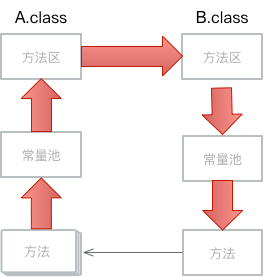

Overview
内存模型
权限控制器
SecurityManager
垃圾回收机制的算法
Class
魔数
方法区
常量池
版本
访问标志
解析
动态解析
静态解析
引用
分布式锁
符合操作
synchronized
Lock
AbstractQueuedSynchronizer
对象头
中断
锁
并发容器队列和集合
ConcurrentHashMap
LockSupport
Executor 任务调度框架
Unsafe
FutureTask
monitor
final
Condition
栈
堆
ClassLoader
字符串
反射
Constructor
Method
Member
Field
Modifier
运行时数据区域
基本类型
字符与字节
运行时环境
静态类
序列化
transient
ZoneId
Supplier
Cloneable
SPI
Thread
ThreadLocal
InheritableThreadLocal
utils
Optional优雅的使用null
Joiner
Published with GitBook
方法区
方法区
它用于存储已被虚拟机加载的类信息,常量,静态变量,即时编译器编译后的代码和常量池。两种之间的访问可以看着方法区对外，
常量池
对内

常量
即使编译
常量池
results matching "
"
No results matching "
"